第 5 章 经典 CNN 架构演进#
本章解决：如何把卷积、池化、全连接等组件组织成高性能网络。逐一剖析 LeNet-5、AlexNet、VGGNet、Inception/GoogLeNet、ResNet 五个经典架构，梳理每代设计对上一代短板的改进，看清网络在更深、更准、更省三个维度上的演进脉络。学完能够读懂主流论文中的网络结构图，并按原论文的优化器、学习率与正则化配置复现这些架构。
5.0 本章导图#
5.1 CNN 设计模式#
第 3、4 章把零件凑齐了：卷积层、池化层、全连接层，加上正则化、数据增强、Dropout、超参调优。本章看它们如何组装——近年来大量 CV 研究其实都在回答"怎么把这些基础积木拼成有效的 CNN"。培养直觉最好的办法是读别人的架构（就像大多数人靠读别人的代码学会写代码）。
作者给每个架构固定讲五件事：创新点（解决了什么问题）、架构、代码实现、学习超参（按原论文配置）、性能（MNIST / ImageNet 成绩）。三个学习目标：
- 理解各架构的结构与超参——简单/中等复杂度问题用 AlexNet、VGGNet 就够，超复杂问题再上 Inception、ResNet；
- 理解每个架构的创新点与动机——每一代网络都是为了解决上一代的具体短板，读完这五个就有能力读懂新出的网络；
- 理解 CNN 的演进脉络与设计者的思考过程——积累"什么可行、什么会出问题"的直觉。
作者最想传递的技能：读论文
逐篇啃论文、抓住核心思想、动手实现——作者认为这是每个 DL 从业者的必备技能，也是本书想留下的最大资产：三四年后的最新技术今天没人能教你，能带走的是"自己去读、自己去实现"的能力。建议动手前先读原论文（链接在各节脚注），第 1 部分的知识足够你读懂 pioneers 的原文。
动手抄架构之前，先记住三条反复出现的设计模式：
模式 1：特征提取 + 分类两段式#
卷积网络几乎总由两部分组成：特征提取——一串卷积层；分类——一串全连接层。从 LeNet、AlexNet 到近几年的 Inception、ResNet，无一例外（图 5.1）。
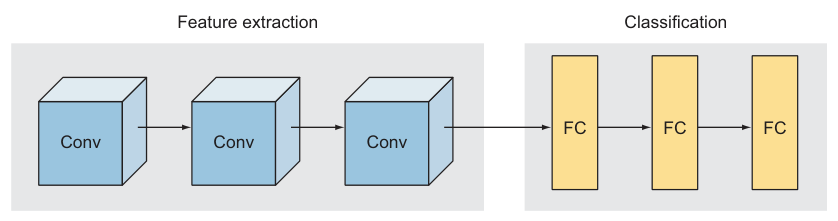
模式 2：深度增加，维度减小#
每一层的输入都是一张"图"。要泛化地看：每张图是 H × W × 深度 的 3D 体。输入层深度 = 颜色通道（灰度 1、RGB 3）；越往深处走，"深度"变成特征图（feature maps）的数量——它代表前层提取出的特征种类。所以你会看到一条铁律（图 5.2）：
- 深度（通道数）随层数增加：224×224×3 → 55×55×96 → 27×27×256 → 13×13×384……
- 空间尺寸随层数减小：224 → 55 → 27 → 13……
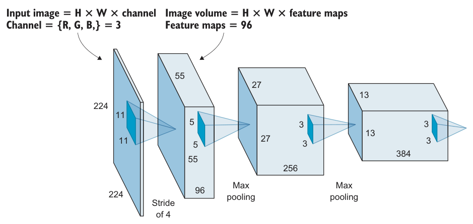
模式 3：全连接层的单元数恒定或递减#
这条不算严格规律，但很实用：一个网络里所有全连接层的隐藏单元数，要么逐层相同、要么逐层递减，几乎见不到逐层递增的。研究表明 FC 单元数保持恒定不影响效果——设计网络时可以少做一个选择题：选一个数，套用到所有 FC 层（AlexNet 的 FC6 = FC7 = 4096 就是典型）。
这些架构成名多半因为它们在 ImageNet 竞赛上成绩好。ImageNet 是一个百万级图像基准，DL/CV 研究者用它对比算法（详见 5.3 节侧栏）。
本章代码片段不可直接运行
书中代码按原论文规格实现结构，目标是教你"读论文 → 写实现"；完整可运行代码在书的官网与 GitHub 仓库（moelgendy/deep_learning_for_vision_systems）。下文所有代码均用 PyTorch 编写，层数/通道/核大小/超参与书一致，参数量已逐一跑模型对账。
5.2 LeNet-5#
1998 年 Lecun 等人提出 LeNet-5——CNN 的开山之作。组件你在第 3 章全见过（当年它们可是新发明）：5 个权重层 = 3 个卷积层 + 2 个全连接层，名字里的"-5"就是指权重层数。
定义：权重层（Weight Layer）
卷积层与全连接层叫权重层——它们带可训练权重；池化层没有任何权重，不算数。描述网络深度时通用的约定是数权重层：比如 AlexNet 称为 8 层深（5 conv + 3 FC）。只关心权重层的原因：它们才反映模型的计算复杂度。
5.2.1 LeNet 架构#
原书的架构串：
C = 卷积层，S = 次采样（池化）层，FC = 全连接层。注意 LeCun 团队用的是 tanh 而不是今天的 ReLU——1998 年 ReLU 还没进 DL 的视野，隐藏层流行 tanh 或 sigmoid。
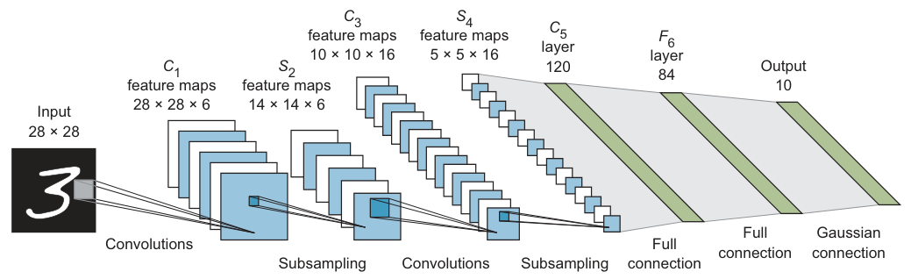 |
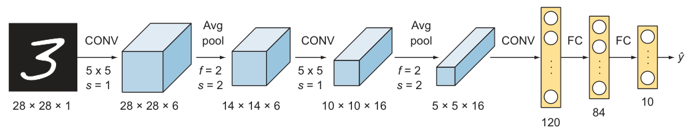 |
图 5.3 LeNet-5 原始架构 · 图 5.4 现代画法的 LeNet-5：5×5 卷积 + 平均池化 + 三层 FC（120/84/10）（截自原书）
5.2.2 LeNet-5 实现（PyTorch）#
读原论文第 6–8 页，抄下四组规格：
| 设计项 | 原论文规格 |
|---|---|
| 各卷积层滤波器数 | C1 = 6，C3 = 16，C5 = 120 |
| 卷积核大小 | 一律 5×5 |
| 池化层 | 每个 conv 后接 2×2、stride 2 的平均池化（当年还没有 max pooling） |
| 激活函数 | 隐藏层 tanh（对称函数被认为比 sigmoid 收敛更快） |
# ===== 书 5.2.2 节 =====
import torch
import torch.nn as nn
class LeNet5(nn.Module):
"""书图 5.4：C1(6) → S2 → C3(16) → S4 → C5(120) → FC6(84) → 输出(10)"""
def __init__(self, num_classes=10):
super().__init__()
self.features = nn.Sequential(
nn.Conv2d(1, 6, kernel_size=5, padding='same'), # C1: 28×28×1 → 28×28×6（same 填充：宽高不变）
nn.Tanh(), # 1998 年还没有 ReLU
nn.AvgPool2d(kernel_size=2, stride=2), # S2: → 14×14×6（书用平均池化，不是最大池化）
nn.Conv2d(6, 16, kernel_size=5), # C3: → 10×10×16（无填充，10 = 14−5+1）
nn.Tanh(),
nn.AvgPool2d(kernel_size=2, stride=2), # S4: → 5×5×16
nn.Conv2d(16, 120, kernel_size=5), # C5: → 1×1×120
nn.Tanh(),
)
self.classifier = nn.Sequential(
nn.Flatten(), # 1×1×120 → 120
nn.Linear(120, 84), # FC6
nn.Tanh(),
nn.Linear(84, num_classes), # FC7 输出层
)
def forward(self, x):
return self.classifier(self.features(x))
model = LeNet5()
print(f"{sum(p.numel() for p in model.parameters()):,}") # 61,706
拓展：softmax 去哪了？
架构串末尾印着 SOFTMAX，代码里却找不到它——PyTorch 惯例是网络直接输出 logits（不加 softmax），训练时用 nn.CrossEntropyLoss：它内部已包含 log-softmax + 负对数似然，数值上比"先 softmax 再取 log"稳定得多。推理要概率时再手动 torch.softmax(out, dim=1)。本章之后所有网络同理。
对账：C1 参数 (5×5×1+1)×6 = 156；C3 = (5×5×6+1)×16 = 2,416；C5 = (5×5×16+1)×120 = 48,120；FC6 = 120×84+84 = 10,164；输出 = 84×10+10 = 850。合计 61,706——与原书的参数汇总（图 5.5）一模一样。按今天的标准这只是个小网络；后面 AlexNet 直接放大一千倍。
读原论文的建议（作者经验）
LeNet 论文比本章其他论文难读。核心内容在论文第 2 节（架构与学习细节）；第 3 节是一堆有趣的实验和结果；后面大篇幅讲 graph transformer network，今天已不常用，可跳过。推荐的阅读顺序：先 AlexNet（5.3），再 VGGNet（5.4），最后回头读 LeNet——读完现代的再看经典，事半功倍。
5.2.3 学习超参#
LeCun 团队用分段衰减的学习率：前 2 个 epoch 用 0.0005，接着 3 个用 0.0002，再 4 个用 0.00005，之后 0.00001；SGD 优化，共训 20 epochs，batch 32。PyTorch 用 LambdaLR 调度器实现分段衰减：
# ===== 书 5.2.3 节 =====
optimizer = torch.optim.SGD(model.parameters(), lr=5e-4) # 基准 lr
def lr_lambda(epoch):
"""原书调度：前 2 个 epoch 5e-4 → 3~5 取 2e-4 → 6~9 取 5e-5 → 之后 1e-5。
注意：LambdaLR 传入的 epoch 从 0 计数，书中的调度条件 `epoch <= 2`
实际覆盖前 3 个 epoch——抄调度函数时留意这个 off-by-one。"""
if epoch <= 2: return 1.0 # lr = 5e-4
elif epoch <= 5: return 2e-4 / 5e-4 # lr = 2e-4
elif epoch <= 9: return 5e-5 / 5e-4 # lr = 5e-5
else: return 1e-5 / 5e-4 # lr = 1e-5
scheduler = torch.optim.lr_scheduler.LambdaLR(optimizer, lr_lambda=lr_lambda)
criterion = nn.CrossEntropyLoss() # softmax 并入损失（见上文拓展）
# 训练循环（20 epochs，batch_size=32）：每个 epoch 结束调 scheduler.step()
5.2.4 MNIST 上的成绩#
MNIST 上训练 LeNet-5，准确率 99% 以上。作者留了个实验：把隐藏层激活换成 ReLU 再跑一遍，观察性能差异（tanh → ReLU 的提速效果在 5.3 节展开）。
5.3 AlexNet#
LeNet 在 MNIST 上很强，但 MNIST 太简单：灰度单通道、只有 10 类。AlexNet 的动机就是造一个更深的网络去学更复杂的函数——它 2012 年赢得 ILSVRC 图像分类竞赛冠军，在 120 万张高分辨率图像、1000 类的 ImageNet 上训练。它是第一个真正意义上的"深度"网络，让 CV 社区从此认真对待卷积网络。
LeNet 和 AlexNet 结构同源：卷积 + 池化堆叠提特征，FC + softmax 收尾。差距在体量：61,000 参数 → 约 6,000 万参数、65 万个神经元——更大的学习容量，才啃得动复杂特征。
侧栏：ImageNet 与 ILSVRC
ImageNet（image-net.org）：为视觉识别研究而生的大型图像库，按 WordNet 词表把图像标注进约 22,000 个类别；图片从网络收集、由人工用 Amazon Mechanical Turk 打标，目前已超 1,400 万张。数据按 synset（同义词组）组织，目标是每个 synset 1,000+ 张图。 ILSVRC（ImageNet Large Scale Visual Recognition Challenge）：ImageNet 主办的年度竞赛，比拼分类、检测、场景标注算法。本章就用 ILSVRC 成绩当作各架构的对比基准。
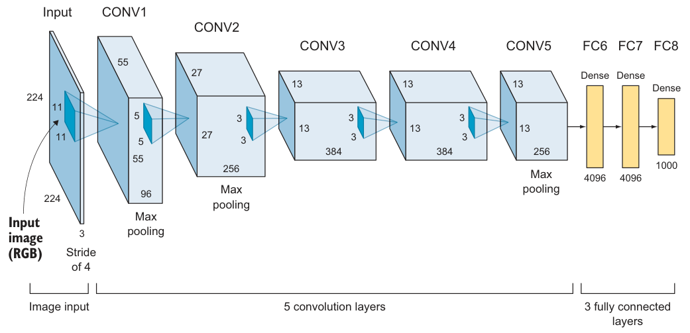
5.3.1 AlexNet 架构#
积木与 LeNet 相同，规格不同：11×11、5×5、3×3 三种卷积核；最大池化降采样；Dropout 防过拟合；隐藏层全部 ReLU（LeNet 是 tanh），输出层 softmax。文字串：
（原书把末项印作 "SOFTMAX7"，是编号笔误，实为第 11 层的 softmax。）
224 还是 227？
AlexNet 原论文写输入 224×224×3，但只有 227×227×3 才能让尺寸算得通：\((227-11)/4+1=55\)。作者判断这是论文的排版笔误——复现时请用 227。
逐层尺寸（对照图 5.7，记住这套手算，复现论文时用得上）：
| 层 | 配置 | 输出尺寸 | 计算 |
|---|---|---|---|
| CONV1 | 11×11, stride 4, 96 核 | 55×55×96 | (227−11)/4+1 = 55 |
| Pool | 3×3, stride 2 | 27×27×96 | (55−3)/2+1 = 27 |
| CONV2 | 5×5, pad 2, 256 核 | 27×27×256 | (27+2×2−5)/1+1 = 27 |
| Pool | 3×3, stride 2 | 13×13×256 | (27−3)/2+1 = 13 |
| CONV3 | 3×3, pad 1, 384 核 | 13×13×384 | (13+2×1−3)/1+1 = 13 |
| CONV4 | 3×3, pad 1, 384 核 | 13×13×384 | 同上 |
| CONV5 | 3×3, pad 1, 256 核 | 13×13×256 | 同上 |
| Pool | 3×3, stride 2 | 6×6×256 | (13−3)/2+1 = 6 |
| Flatten | — | 9,216 | 6×6×256 |
| FC6 / FC7 | 4,096 神经元 | — | 模式 3：两个 FC 同宽 |
| Softmax | 1,000 神经元 | — | 1000 类 |
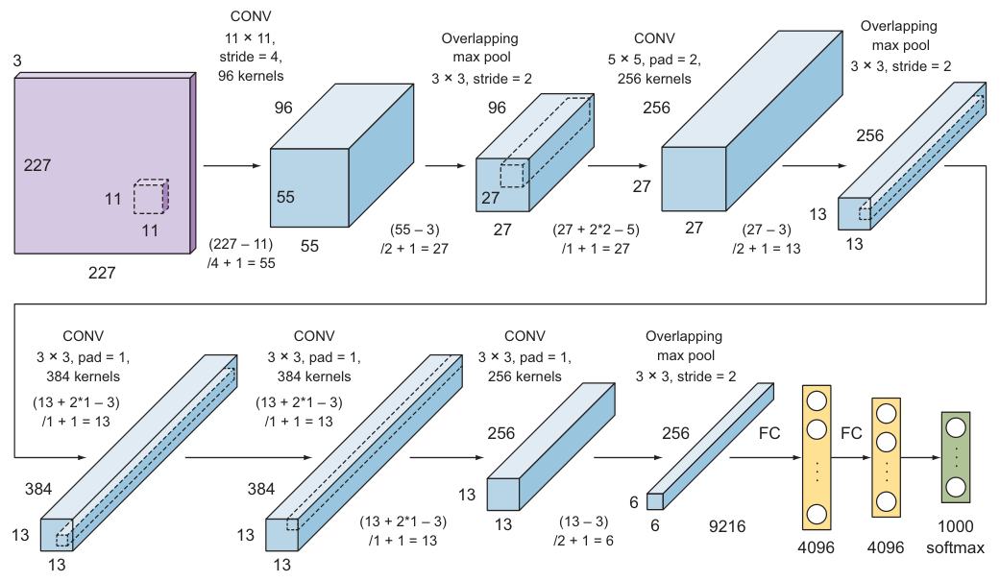
这些超参是怎么定出来的？
核大小、深度、stride、池化位置——全靠大量试错。思路不变：多堆权重层提升容量，中间插池化控制尺寸（第 2 章）。精确调参正是 CNN 设计的痛点之一；下一节的 VGGNet 用"统一配置"缓解了它。
5.3.2 AlexNet 的创新点#
AlexNet 之前，DL 只在语音识别等少数领域起步；AlexNet 让 CV 社区相信 DL 真的行。它的创新点你在前几章都见过，这里快速过一遍：
① ReLU 激活函数。 用 ReLU 替代 tanh/sigmoid，训练快得多。原因：sigmoid 在饱和区导数极小，权重更新几乎消失——梯度消失（vanishing gradient）问题。ReLU 定义 \(f(x)=\max(0,x)\)，第 2 章讲过细节。
侧栏：梯度消失问题
sigmoid 把大输入空间压进 (0,1)（tanh 是 (−1,1)），输入大幅变化只引起输出的微小变化，导数因此变得极小。反向传播时梯度要逐层连乘权重矩阵，小于 1 的因子连乘 → 指数级衰减到 0，浅层学不到东西，网络性能饱和甚至退化。反过来梯度也可能指数级增大——梯度爆炸（exploding gradients）。这个问题在本章 5.6 节 ResNet 处还会回来，那才是它的正面决战。
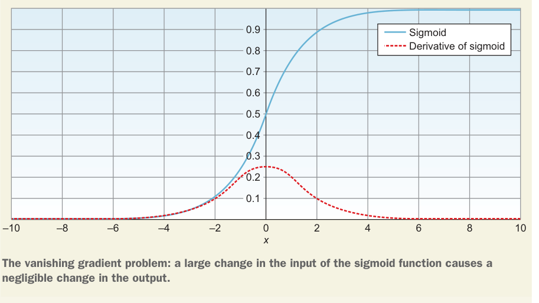
拓展：ReLU 为什么快——把账算到底
对比两边的梯度上界：sigmoid 导数 \(\sigma'(x)=\sigma(x)(1-\sigma(x))\le 0.25\)，且在饱和区（|x|>4）趋近 0；n 层连乘最好情况衰减 \(0.25^n\)，坏情况直接归零。ReLU 在正区导数恒等于 1，n 层连乘不缩水，梯度原样到达浅层；负区导数为 0 反而带来稀疏性。AlexNet 论文的实测：同样配置下 ReLU 版把训练错误率降到 25% 所需的 epoch 数约为 tanh 版的 ⅙。代价是 ReLU 无上界、输出分布可能漂移——BN（第 4 章）正是它的好搭档。
② Dropout 层。 被 Dropout 的神经元前向不参与、反向不更新。这意味着每喂一次输入，网络等于采样了一个不同的子架构，但所有子架构共享同一套权重。神经元无法依赖特定同伴，被迫学出与任意随机子集都能协作的稳健特征。Krizhevsky 在两个 FC 层用了 p = 0.5。
拓展：Dropout 为什么等价于免费集成
训练时每个 mini-batch 采样一个子网络，成千上万个子网络各自学一点，但权重共享让它们互相"借脑"；测试时关闭 Dropout、激活按比例缩放，相当于把所有子网络的预测平均——这就是书说"采样不同架构、共享权重"的集成（ensemble）视角。所以 Dropout 0.5 时常把 FC 层放宽一倍来补偿容量（AlexNet 的 4096 也有此考量）。
③ 数据增强。 用保持标签的变换（旋转、翻转、缩放等）人工扩充训练集，第 4 章详解过。
④ 局部响应归一化（LRN）。 与第 4 章的批归一化（BN）不同，LRN 靠"邻通道竞争"加速收敛。如今 BN 已全面替代 LRN——书里的实现也直接用 BN。
⑤ 权重正则化。 Krizhevsky 用 weight decay = 0.0005，即第 4 章的 L2 正则。过拟合压不住时可以调大 λ：
# L2 正则交给优化器：λ 就是 weight_decay（Krizhevsky 取 5e-4）
optimizer = torch.optim.SGD(model.parameters(), lr=0.01, momentum=0.9,
weight_decay=5e-4)
⑥ 双 GPU 训练。 当年的 GTX 580 只有 3 GB 显存，装不下 120 万训练样本，团队把网络拆到两块 GPU 上分头算、按需通信（论文里网络画成两条管道就是这个原因）。今天你不需要复刻这套细节——分布式训练已有成熟得多的方案。
5.3.3 AlexNet 实现（PyTorch）#
读原论文第 4 页的架构描述。8 个权重层（5 conv + 3 FC），末层 1000 类 softmax；书的实现给每个卷积层后加了 BN、所有隐藏层用 ReLU：
# ===== 书 5.3.3 节 =====
class AlexNet(nn.Module):
"""8 个权重层：5 conv + 3 FC；输入 227×227×3（论文写 224 是笔误）"""
def __init__(self, num_classes=1000):
super().__init__()
self.features = nn.Sequential(
# 第 1 层 CONV1：11×11 大核、stride 4；书版 conv 后接 BN 替代原论文 LRN
nn.Conv2d(3, 96, kernel_size=11, stride=4), # → 55×55×96
nn.ReLU(inplace=True),
nn.MaxPool2d(kernel_size=3, stride=2), # → 27×27×96（overlapping pool）
nn.BatchNorm2d(96),
# 第 2 层 CONV2：5×5，same padding；原论文自此层起带 0.0005 的 weight decay
nn.Conv2d(96, 256, kernel_size=5, padding=2), # → 27×27×256
nn.ReLU(inplace=True),
nn.MaxPool2d(kernel_size=3, stride=2), # → 13×13×256
nn.BatchNorm2d(256),
# 第 3 层 CONV3：AlexNet 作者在 conv3 之后没有加池化
nn.Conv2d(256, 384, kernel_size=3, padding=1), # → 13×13×384
nn.ReLU(inplace=True),
nn.BatchNorm2d(384),
# 第 4 层 CONV4（与第 3 层同构）
nn.Conv2d(384, 384, kernel_size=3, padding=1), # → 13×13×384
nn.ReLU(inplace=True),
nn.BatchNorm2d(384),
# 第 5 层 CONV5
nn.Conv2d(384, 256, kernel_size=3, padding=1), # → 13×13×256
nn.ReLU(inplace=True),
nn.BatchNorm2d(256),
nn.MaxPool2d(kernel_size=3, stride=2), # → 6×6×256
)
self.classifier = nn.Sequential(
nn.Flatten(), # 6×6×256 = 9,216
nn.Linear(9216, 4096), # FC6
nn.ReLU(inplace=True),
nn.Dropout(0.5),
nn.Linear(4096, 4096), # FC7（与 FC6 同宽，设计模式 3）
nn.ReLU(inplace=True),
nn.Dropout(0.5),
nn.Linear(4096, num_classes), # FC8 → 1000 类 logits
)
def forward(self, x):
return self.classifier(self.features(x))
model = AlexNet()
print(f"{sum(p.numel() for p in model.parameters()):,}") # 62,381,096
对账：可训练参数 62,381,096（书里参数汇总的 Total 62,383,848 还包含 5 个 BN 层共 2,752 个不可训练的均值/方差统计量）；FC 三层就占约 5,860 万——大头永远在全连接。
5.3.4 学习超参#
AlexNet 训了 90 epochs，在两块 GTX 580 上跑了 6 天。初始 lr = 0.01、momentum = 0.9，验证误差不再改善时衰减 lr——正文说"除以 10"，书中代码实际每次乘 √0.1 ≈ 0.316：
# ===== 书 5.3.4 节 =====
import math
# L2 正则交给优化器：weight_decay=5e-4（原论文的 weight decay）
# 注意：weight_decay 作用于交给优化器的全部参数（含 bias、BN 的 γ/β）
optimizer = torch.optim.SGD(model.parameters(), lr=0.01, momentum=0.9, weight_decay=5e-4)
# 验证损失停滞时 lr × 0.1^0.5 ≈ ×0.316（patience 用默认值）
scheduler = torch.optim.lr_scheduler.ReduceLROnPlateau(optimizer, mode='min',
factor=math.sqrt(0.1))
criterion = nn.CrossEntropyLoss() # 交叉熵损失（内部已含 log-softmax）
# 训练 90 epochs、batch_size=128；每个 epoch 调 scheduler.step(val_loss)
5.3.5 AlexNet 成绩#
2012 年 ILSVRC 上 top-5 错误率 15.3%，碾压第二名的 26.2%（传统分类器方法）。这一跳让 CV 社区看到了卷积网络的潜力，直接催生了后面几代架构。
侧栏：top-1 / top-5 错误率是什么
top-1：正确类别没拿到最高分的比例；top-5：正确类别没进前五猜测的比例。例：100 类问题喂一张猫图，输出 Cat 70%、Dog 20%、Horse 5%、Motorcycle 4%、Car 0.6%、Plane 0.4%——若真实标签是 Cat，本题 top-1 答对；若真实标签是 Horse，top-1 错、但进了 top-5。统计 100 张图里漏掉真标签的次数即错误率。 理想是永远 top-1 正确，但 top-5 能更全面地衡量"错的时候离正确答案有多近"——1000 类问题里随机猜 top-1 命中率只有 0.1%，top-5 也才 0.5%，15.3% 的成绩含金量极高。
5.4 VGGNet#
VGGNet 2014 年出自牛津大学 Visual Geometry Group（名字由来），组件与 LeNet/AlexNet 完全同款——区别只是更深（更多 conv、pool、dense）。它又名 VGG16：16 个权重层 = 13 conv + 3 FC。成名点不是新零件，而是统一架构带来的易懂好抄。
5.4.1 创新点：统一组件 + 小核堆叠#
AlexNet 的痛点：每层核大小、padding、stride 都要单独试错。VGG 的答案是一刀切：
- 所有卷积层：3×3 核、stride 1、same padding；
- 所有池化层：2×2 池、stride 2。
为什么改用小核？Simonyan 和 Zisserman 的理由：同样大的感受野下，多个小核堆叠优于一个大核——堆叠增加了非线性层数（更多 ReLU），决策函数更有区分度；同时参数更少、成本更低。
侧栏：感受野（Receptive Field）
感受野 = 输出所依赖的输入图像区域（第 3 章）。两个 3×3 卷积（中间不插池化）的等效感受野是 5×5；三个连起来是 7×7。小核堆叠 = 用更少的参数买同样大的"视野"，还白赚两层非线性。
把参数账摆出来：C 通道下，三层 3×3 卷积的权重数是 \(3\times(3^2C^2)=27C^2\)；一个 7×7 卷积要 \(7^2C^2=49C^2\)——多出 81%。更深反而更省。
拓展：3×3 由此成为默认核
VGG 之后，3×3 逐步成了全行业的默认卷积核：Inception 的 3×3 分支、ResNet 的 bottleneck 中层全是 3×3；连 Inception 的 5×5 分支后来也在实践中被两个 3×3 级联替换。今天读到的任何现代网络几乎找不到 11×11 这样的大核——这笔 27C² 对 49C² 的账就是起点。
架构组织方式：若干 3×3 卷积堆成一个块，块尾接 2×2 池化；卷积块序列之后接传统分类器（FC + softmax），见图 5.8。
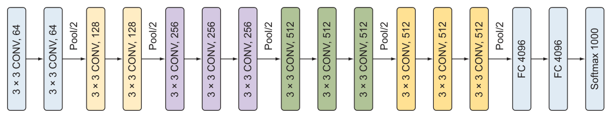
5.4.2 VGGNet 的各配置#
Simonyan 和 Zisserman 给出 A、A-LRN、B、C、D、E 六种配置（图 5.9），全部同一设计模板，只是每块卷积层数不同。D = VGG16、E = VGG19 最常用（名字来自权重层数）。每个块 = 一串 3×3 卷积 + 块尾 2×2 池化。
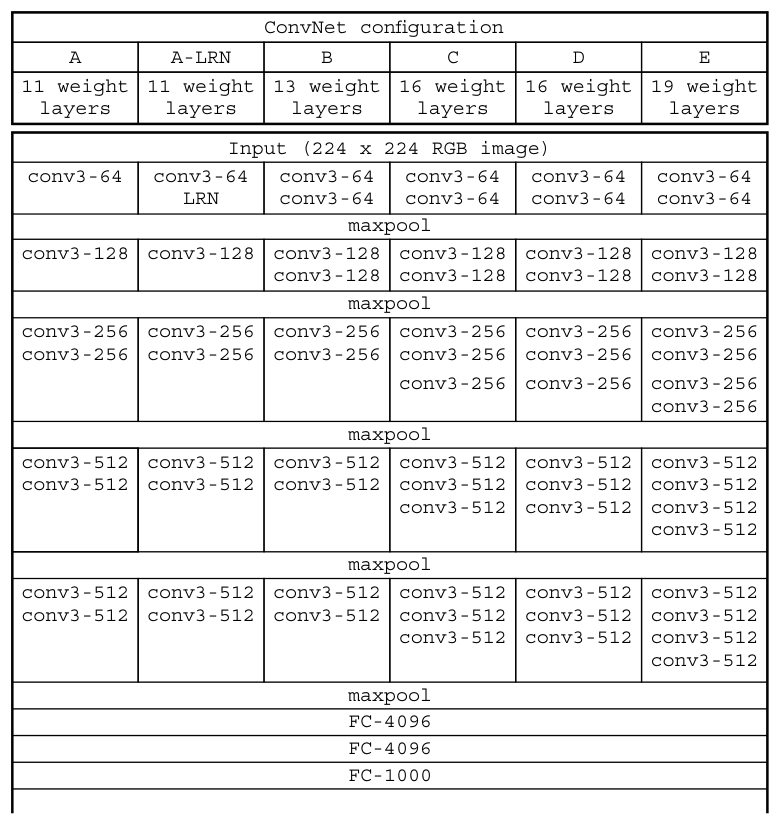
各配置参数量（原书表 5.1，单位：百万）：
| 配置 | A | A-LRN | B | C | D (VGG16) | E (VGG19) |
|---|---|---|---|---|---|---|
| 参数量 | 133 | 133 | 134 | 134 | 138 | 144 |
VGG16 更常用：性能几乎追平 VGG19，参数却少一截。
5.4.3 VGG16 实现（PyTorch）#
防过拟合的正则（原论文规格）：L2 正则 weight decay \(5\times10^{-4}\)（书实现里为省篇幅未加，下面超参代码补上）、前两个 FC 层后 Dropout 0.5。
# ===== 书 5.4.3 节 =====
class VGG(nn.Module):
"""配置 D（VGG16）：每块卷积数 (2,2,3,3,3)；配置 E（VGG19）= (2,2,4,4,4)"""
def __init__(self, block_convs=(2, 2, 3, 3, 3), num_classes=1000):
super().__init__()
channels = [64, 128, 256, 512, 512] # 5 个块的通道数（图 5.9）
layers, in_ch = [], 3
for n, ch in zip(block_convs, channels):
for _ in range(n): # n 个 3×3 卷积：stride 1 + same padding
layers += [nn.Conv2d(in_ch, ch, kernel_size=3, stride=1, padding=1),
nn.ReLU(inplace=True)]
in_ch = ch
layers += [nn.MaxPool2d(kernel_size=2, stride=2)] # 块尾统一 2×2 池化
self.features = nn.Sequential(*layers)
self.classifier = nn.Sequential(
nn.Flatten(), # 224/2⁵ = 7 → 7×7×512 = 25,088
nn.Linear(25088, 4096), # FC-4096
nn.ReLU(inplace=True),
nn.Dropout(0.5), # 前 2 个 FC 后 Dropout
nn.Linear(4096, 4096),
nn.ReLU(inplace=True),
nn.Dropout(0.5),
nn.Linear(4096, num_classes),
)
def forward(self, x):
return self.classifier(self.features(x))
vgg16 = VGG() # 配置 D：16 权重层
vgg19 = VGG(block_convs=(2, 2, 4, 4, 4)) # 配置 E：第 3/4/5 块各加一层卷积
print(f"{sum(p.numel() for p in vgg16.parameters()):,}") # 138,357,544
print(f"{sum(p.numel() for p in vgg19.parameters()):,}") # 143,667,240
两个数字都与原书一致：138,357,544 / 143,667,240。
5.4.4 学习超参与成绩#
训练流程照搬 AlexNet：mini-batch GD + momentum 0.9，初始 lr 0.01，验证集准确率停滞时 ÷10。
# ===== 书 5.4.3 节（超参） =====
optimizer = torch.optim.SGD(vgg16.parameters(), lr=0.01, momentum=0.9,
weight_decay=5e-4) # 论文的 L2：5×10⁻⁴
scheduler = torch.optim.lr_scheduler.ReduceLROnPlateau(optimizer, mode='max', factor=0.1)
criterion = nn.CrossEntropyLoss()
成绩：VGG16 在 ImageNet 上 top-5 错误率 8.1%（AlexNet 是 15.3%），VGG19 更进一步到约 7.4%。值得一记的细节：尽管参数更多、网络更深，VGG 反而需要更少的 epoch 就收敛——深度 + 小卷积核带来了隐式正则化。
5.5 Inception 与 GoogLeNet#
2014 年 Google 团队发表 "Going Deeper with Convolutions"，Inception 网络问世。它的目标写进了论文标题：网络更深的同时，把网络内部的计算资源用得更省。其中一个具体形态叫 GoogLeNet，作为该团队的 ILSVRC 2014 参赛作品：22 层深（超过 VGG），参数却只有 VGG 的约 1/12（约 1.38 亿 → 约 1300 万），成绩还显著更好。积木仍学自经典网络（AlexNet/VGG），新零件叫 Inception 模块（inception module）。
5.5.1 创新点：核尺寸别选了，全都要#
设计前几代网络时，每层都要做两道选择题：
- 卷积核多大？ 1×1、3×3、5×5，甚至 11×11（AlexNet）。小核抓细节，大核会漏掉细小特征（第 3 章）——每一层都得试。
- 池化层放哪？ AlexNet 每一两个 conv 就池化一次；VGG 随网络加深改为每两、三、四个 conv 池化一次。全靠实验摸。
Inception 的回答相当豪横：别选了，全都放进同一个模块里并行跑。于是架构从"层叠层"变成"模块叠模块"（图 5.10）：Inception 网络开头是一个卷积层 + 池化层，中间堆 inception 模块和池化层，末尾还是常规的全连接分类器。
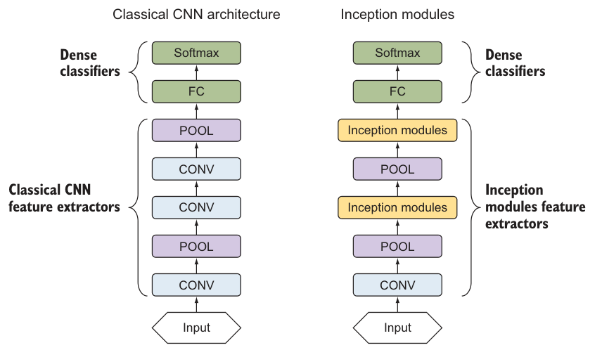
5.5.2 Inception 模块：naive 版本#
Inception 模块 = 四层并行组合：
- 1×1 卷积层
- 3×3 卷积层
- 5×5 卷积层
- 3×3 最大池化层
四路输出在通道维拼接成一个体，作为下一级的输入。跟着书上的例子走一遍，设输入是 32×32×200：
| 分支 | 配置 | 输出 |
|---|---|---|
| 1×1 卷积 | 64 核，padding = same | 32×32×64 |
| 3×3 卷积 | 128 核，padding = same | 32×32×128 |
| 5×5 卷积 | 32 核，padding = same | 32×32×32 |
| 3×3 max pool | padding = same，stride 1 | 32×32×200（池化不改通道） |
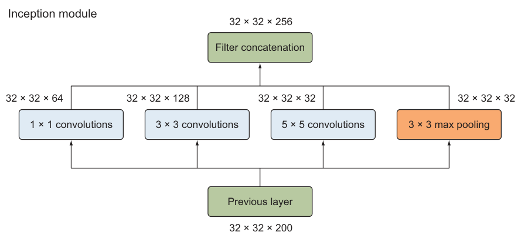
原书笔误（勘误①）
原书说四个输出拼成 32×32×256。但池化分支不改变通道数——输入 200 通道进来，3×3 max pool（same、stride 1）出去还是 200 通道。正确的拼接深度是 \(64+128+32+200=\textbf{424}\)，不是 256。（图 5.11 里池化分支标的 32×32×32 同样不对，应为 32×32×200。）
为什么用 padding = same
same 填充指让输出与输入等宽等高——PyTorch 里用 padding 参数控制：3×3 核配 padding=1、5×5 核配 padding=2（nn.Conv2d 也直接支持 padding='same'）。四条分支必须等宽等高才能在通道维对齐拼接——这也是 Inception 模块里所有 conv 用 same、池化用 stride 1 的原因：拼接时直接把各分支通道数加起来即可。
5.5.3 Inception 模块：带降维的版本#
naive 版有个大问题：大核太贵。算一算上面例子里 5×5 分支的乘法量：输入 32×32×200，接 32 个 5×5×32 的核，
现代计算机跑得动，但确实贵。救星是降维层（dimensionality reduction layer）——1×1 卷积：在大核（3×3、5×5）之前先插一个 1×1 卷积把深度压小，乘法量跟着崩塌。
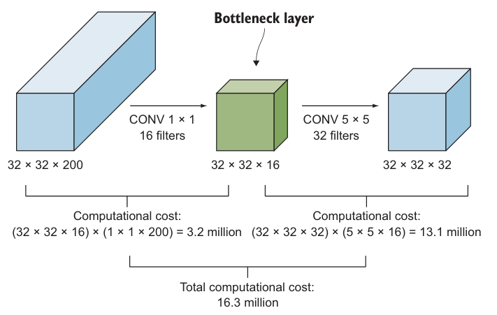
还是那个例子：输入 32×32×200，先过 16 核的 1×1 卷积压成 32×32×16，再上 5×5 卷积。输出还是 32×32×32（与不加降维层时相同），但成本变成两段：
1.63 亿 → 1630 万，整整省 90%。
侧栏：1×1 卷积层
1×1 卷积保持空间尺寸（H、W）不变，只改通道数（深度）：\(6\times6\times32\) 的输入乘以 \(1\times1\times\#\text{filters}\) 的核，输出 \(6\times6\times\#\text{filters}\)。因为它把网络收窄再放开、形似瓶子的瓶颈，也叫瓶颈层（bottleneck layer）；又因为它专门压维度，叫 reduce layer。
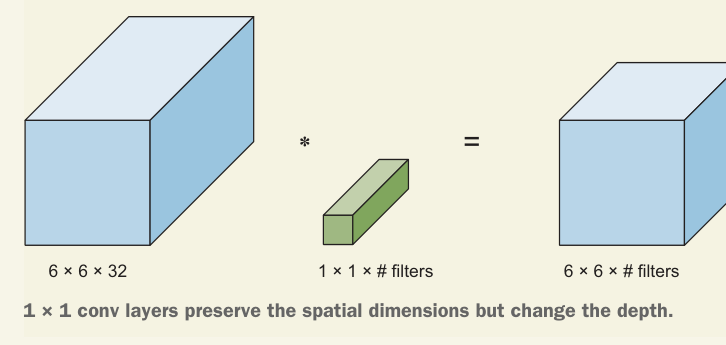
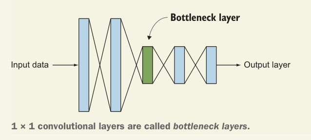
拓展：1×1 卷积为什么这么划算
两笔账。乘法账（书上的）：5×5 卷积的乘法数 = 输出元素数 × 每个输出元素的乘法量 = \(HW\,C_{out}\times(5\times5\,C_{in})\)，与 \(C_{in}\) 成正比——先用 1×1 把 \(C_{in}\) 从 200 压到 16，乘法直接 ÷12.5。参数账同理：权重数从 \(5\times5\times200\times C_{out}\) 降到 \(1\times1\times200\times16+5\times5\times16\times C_{out}\)。 那压扁了不怕丢信息吗？Szegedy 等人的实验结论（书里原话）：只要降得适度，大幅压缩表示尺寸也不伤性能。直觉是 1×1 相当于对每个像素位置做一次跨通道的"信息重组"，通道之间的相关性往往远高于压后的通道数，压掉的是冗余不是信号。这个思想 5.6 节的 ResNet bottleneck 会原样再用一次。
现在把降维版模块拼出来（图 5.13）：保留四路拼接的骨架，在 3×3 和 5×5 之前各加一个 1×1 reduce 层；max pool 之后也要补一个 1×1——因为池化层不降深度，不补的话拼接深度会失控。书里给出的设计动机：先在多个尺度上分别处理视觉信息再聚合，下一级就能同时从不同尺度抽象特征；降维让每级可以放心加大单元数，而不会让后级计算量爆炸。
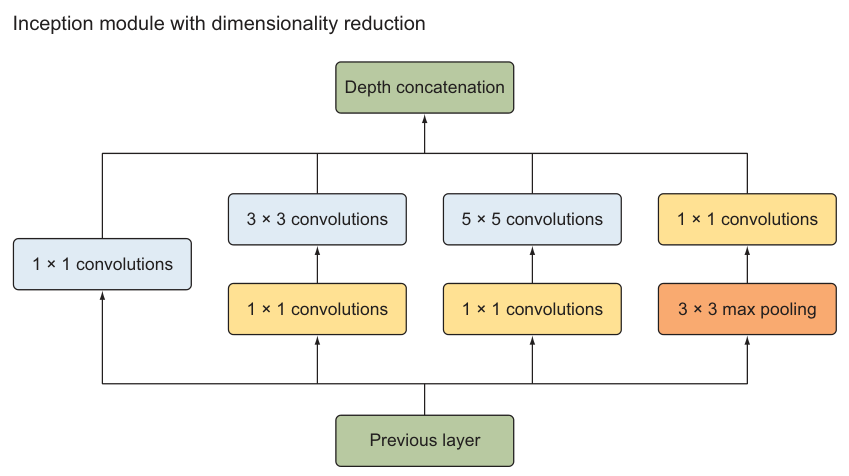
小结：不想纠结核尺寸、不想决定池化位置？Inception 让你全都要——这是 naive 版；大核太贵，就在 3×⅗×5 前与池化后插 1×1 reduce 层——这是降维版。
5.5.4 Inception 架构与 GoogLeNet#
用降维版模块堆网络：模块叠模块，中间隔 3×3 池化层降采样（图 5.14），想多深就堆多少。原论文团队造的特定形态就是 GoogLeNet（ILSVRC 2014 参赛网络）：共 9 个 inception 模块，每隔几个块插一个 max pool 控制尺寸。
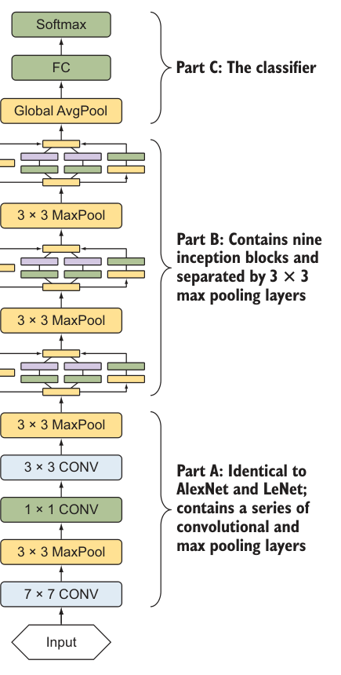
为方便实现，书把 GoogLeNet 拆成三部分：
| 部分 | 内容 |
|---|---|
| Part A | 与 LeNet/AlexNet 同款：一串卷积 + 池化 |
| Part B | 9 个 inception 模块，按 2 + 池化 + 5 + 池化 + 2 分组（即 3a,3b → pool → 4a…4e → pool → 5a,5b） |
| Part C | 分类器：全连接 + softmax |
原书笔误（勘误②）
原书正文把 Part B 写成"两个模块 + 池化 + 五个模块 + 池化 + 五个模块"（2+5+5=12 个）。但 GoogLeNet 一共只有 9 个 inception 模块，正确分组是 2+5+2——书里自己的代码（3a,3b / 4a–4e / 5a,5b）和图 5.15 都是 2+5+2。
5.5.5 GoogLeNet 实现（PyTorch）#
每个 inception 模块四条路线（对照图 5.16）：① 1×1 卷积；② 1×1 → 3×3；③ 1×1 → 5×5；④ 3×3 池化 → 1×1。各路线滤波器数从原论文的配置表（图 5.17）抄：
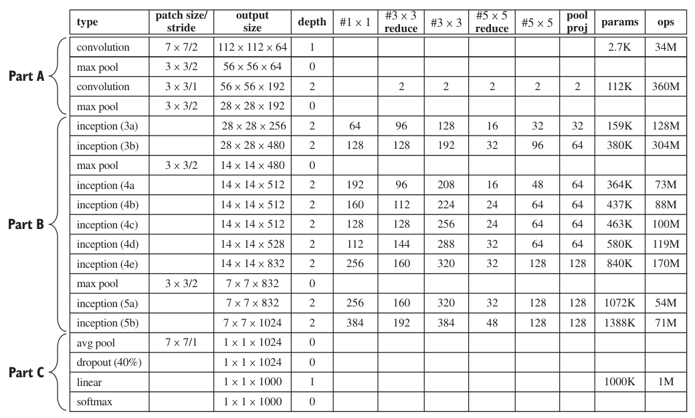
整理成表（原书表 5.2 只列了 3a/3b，这里补全 9 个模块）：
| 模块 | #1×1 | #3×3 reduce | #3×3 | #5×5 reduce | #5×5 | pool proj |
|---|---|---|---|---|---|---|
| inception (3a) | 64 | 96 | 128 | 16 | 32 | 32 |
| inception (3b) | 128 | 128 | 192 | 32 | 96 | 64 |
| inception (4a) | 192 | 96 | 208 | 16 | 48 | 64 |
| inception (4b) | 160 | 112 | 224 | 24 | 64 | 64 |
| inception (4c) | 128 | 128 | 256 | 24 | 64 | 64 |
| inception (4d) | 112 | 144 | 288 | 32 | 64 | 64 |
| inception (4e) | 256 | 160 | 320 | 32 | 128 | 128 |
| inception (5a) | 256 | 160 | 320 | 32 | 128 | 128 |
| inception (5b) | 384 | 192 | 384 | 48 | 128 | 128 |
# ===== 书 5.5.5 节 =====
class InceptionModule(nn.Module):
"""四条路线并行 → 通道维拼接（PyTorch 的通道维是 dim=1）"""
def __init__(self, in_ch, f1x1, f3x3_red, f3x3, f5x5_red, f5x5, f_pool):
super().__init__()
# 路线①：1×1 直连
self.route1 = nn.Sequential(nn.Conv2d(in_ch, f1x1, kernel_size=1), nn.ReLU())
# 路线②：1×1 降维 → 3×3
self.route2 = nn.Sequential(nn.Conv2d(in_ch, f3x3_red, kernel_size=1), nn.ReLU(),
nn.Conv2d(f3x3_red, f3x3, kernel_size=3, padding=1), nn.ReLU())
# 路线③：1×1 降维 → 5×5
self.route3 = nn.Sequential(nn.Conv2d(in_ch, f5x5_red, kernel_size=1), nn.ReLU(),
nn.Conv2d(f5x5_red, f5x5, kernel_size=5, padding=2), nn.ReLU())
# 路线④：3×3 池化（不降深度）→ 1×1 补一刀
self.route4 = nn.Sequential(nn.MaxPool2d(kernel_size=3, stride=1, padding=1),
nn.Conv2d(in_ch, f_pool, kernel_size=1), nn.ReLU())
def forward(self, x):
return torch.cat([self.route1(x), self.route2(x),
self.route3(x), self.route4(x)], dim=1)
# ===== 书 5.5.5 节：GoogLeNet 主体 =====
class GoogLeNet(nn.Module):
def __init__(self, num_classes=1000):
super().__init__()
# ---- Part A：7×7/2 → 3×3池 → 1×1(64) → 3×3(192) → 3×3池 ----
# 原论文此处用 LocalRespNorm，书实现换成了 BatchNorm（LRN 已被 BN 取代）
self.partA = nn.Sequential(
nn.Conv2d(3, 64, kernel_size=7, stride=2, padding=3), nn.ReLU(), # 224 → 112
nn.MaxPool2d(kernel_size=3, stride=2, padding=1), # 112 → 56
nn.BatchNorm2d(64),
nn.Conv2d(64, 64, kernel_size=1), nn.ReLU(),
nn.Conv2d(64, 192, kernel_size=3, padding=1), nn.ReLU(),
nn.BatchNorm2d(192),
nn.MaxPool2d(kernel_size=3, stride=2, padding=1), # 56 → 28
)
# ---- Part B：2 + 5 + 2 共 9 个 inception 模块（勘误②：不是 2+5+5）----
self.inc3a = InceptionModule(192, 64, 96, 128, 16, 32, 32)
self.inc3b = InceptionModule(256, 128, 128, 192, 32, 96, 64)
self.pool1 = nn.MaxPool2d(kernel_size=3, stride=2, padding=1) # 28 → 14
self.inc4a = InceptionModule(480, 192, 96, 208, 16, 48, 64)
self.inc4b = InceptionModule(512, 160, 112, 224, 24, 64, 64)
self.inc4c = InceptionModule(512, 128, 128, 256, 24, 64, 64)
self.inc4d = InceptionModule(512, 112, 144, 288, 32, 64, 64)
self.inc4e = InceptionModule(528, 256, 160, 320, 32, 128, 128)
self.pool2 = nn.MaxPool2d(kernel_size=3, stride=2, padding=1) # 14 → 7
self.inc5a = InceptionModule(832, 256, 160, 320, 32, 128, 128)
self.inc5b = InceptionModule(832, 384, 192, 384, 48, 128, 128)
# ---- Part C：分类器 ----
self.partC = nn.Sequential(
nn.AdaptiveAvgPool2d(1), # 7×7×1024 → 1×1×1024（全局平均池化）
nn.Flatten(),
nn.Dropout(0.4), # dropout 40%
nn.Linear(1024, num_classes), # 书示例代码输出 10 类（CIFAR）；ImageNet 用 1000
)
def forward(self, x):
x = self.partA(x)
x = self.pool1(self.inc3b(self.inc3a(x)))
x = self.pool2(self.inc4e(self.inc4d(self.inc4c(self.inc4b(self.inc4a(x))))))
x = self.inc5b(self.inc5a(x))
return self.partC(x)
model = GoogLeNet()
print(f"{sum(p.numel() for p in model.parameters()):,}") # 6,999,064
拓展：参数到底是 700 万还是 1300 万？
上面按书结构实现的主干网络是 6,999,064 个参数。原论文的完整版还带两个辅助分类器（auxiliary classifiers，分别挂在 4a、4d 之后，用于中途注入梯度、缓解深网训练难），加上它们总数约 1,300 万——书里"参数减少 12 倍（1.38 亿 → 约 1300 万）"取的就是含辅助分类器的口径（torchvision 的 googlenet 即 13,005,084）。本书实现没做辅助分支，无需纠结。
Part C 的细节：Szegedy 等人实验发现加一层 7×7 平均池化能让 top-1 准确率再涨约 0.6%，再接 40% 的 Dropout 防过拟合。图 5.18 是 Part A 的结构图（7×7 conv → 3×3 pool → 1×1 conv → 3×3 conv → 3×3 pool）：
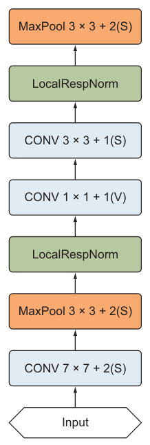
原书笔误（小）
书中 Part A 代码注释写 "input layer with size = 24 × 24 × 3"，而代码实际输入的图像是 224×224×3——应为 224，注释笔误。
5.5.6 学习超参#
SGD + momentum 0.9（不用 Nesterov）；固定学习率衰减：每 8 个 epoch 乘 0.96（即衰减 4%）。书给的示例配置：初始 lr 0.01、batch 256、25 epochs。
# ===== 书 5.5.6 节 =====
import math
optimizer = torch.optim.SGD(model.parameters(), lr=0.01, momentum=0.9, nesterov=False)
# lr = 0.01 × 0.96^floor((1+epoch)/8)：每 8 个 epoch 乘 0.96（epoch 从 0 计）
scheduler = torch.optim.lr_scheduler.LambdaLR(
optimizer, lr_lambda=lambda epoch: 0.96 ** math.floor((1 + epoch) / 8))
criterion = nn.CrossEntropyLoss()
# 训练 25 epochs、batch_size=256（书示例；每个 epoch 调 scheduler.step()）
5.5.7 Inception 成绩#
GoogLeNet 是 ILSVRC 2014 冠军，top-5 错误率 6.67%——离人类水平已经很近，远好于 AlexNet 和 VGGNet。
5.6 ResNet#
残差网络（Residual Neural Network, ResNet），2015 年微软研究院出品。两大法宝：带 skip connection 的残差模块 + 隐藏层重度 BatchNorm。这套组合拳让他们训出了 50、101、152 层的极深网络——计算复杂度却比 19 层的 VGGNet 还低。ResNet 拿下 ILSVRC 2015 冠军，top-5 错误率 3.57%，超过此前所有 ConvNet。
5.6.1 创新点：skip connection 解锁"超深"#
回看演进线：LeNet → AlexNet → VGG → Inception，规律是越深、容量越大、提特征越强——深网能表达复杂函数，从低层边缘到高层的复杂特征都能学到。那能不能一路加深到 50、100、150 层？
第 4 章说过：层数太多容易过拟合。但这不是主要障碍——Dropout、L2、BatchNorm 都治得住。真正卡住加深的是另一个现象：梯度消失。
侧栏：梯度消失与梯度爆炸
极深网络里，更新权重的信号传到浅层时已经非常微弱。回顾第 2 章的梯度下降：误差梯度从最后一层逐层往回传，每经过一层就要乘一次该层的权重矩阵——小于 1 的因子连乘，梯度指数级缩水到 0，浅层学不动，网络性能饱和甚至快速退化（vanishing gradient）。反过来梯度也可能指数级膨胀，爆出巨大的数值（exploding gradients）。
He 等人的解法很优雅：给梯度开一条直通车。跳跃连接（skip connection）把前面层的信息直接送到后面层，为梯度提供一条绕过中间层的捷径路径。另一个重要收益：skip connection 让模型可以学出恒等函数（identity function）——就算新增的卷积层什么都没学到，输出至少等于输入，新层再差也不会拖累前一层（图 5.19），深度从此"只赚不亏"。
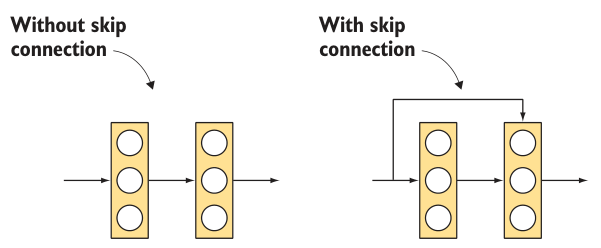
细节看图 5.20：捷径箭头指向的是第二个卷积层的末尾——两条路径在该层 ReLU 之前相加。x 走捷径，主路算出 \(f(x)\)，相加后一起过激活：
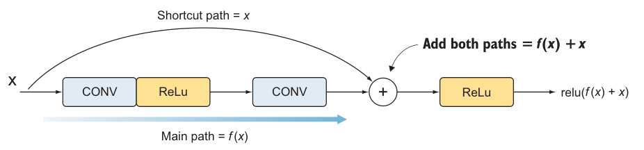
拓展：残差连接为什么治梯度消失——一行求导
把块输出写成 \(y=f(x)+x\)，反向传播时 \(\dfrac{\partial y}{\partial x}=\dfrac{\partial f}{\partial x}+1\)。关键在那个 "+1"：无论 \(f\) 的导数多小，梯度里永远有一份"1"原封不动地流回浅层——连乘链条上每过一块就补一个 1，梯度不再指数衰减（对照图 5.20 的捷径箭头）。同理，恒等项让"最优解 = 恒等映射"变得触手可及：多余层只要把 \(f\) 推向 0 就无害，这就是 152 层训得动的数学根基。
代码上 skip connection 一目了然——最简残差块只要两个 3×3 卷积加一条捷径：
# ===== 书 5.6.1 节：skip connection 结构演示 =====
class SimpleResidualBlock(nn.Module):
"""最简残差块：两个 3×3 卷积（F1 个滤波器）+ 捷径，输出 relu(f(x)+x)"""
def __init__(self, f1):
super().__init__()
self.conv1 = nn.Conv2d(f1, f1, kernel_size=3, stride=1, padding=1)
self.conv2 = nn.Conv2d(f1, f1, kernel_size=3, stride=1, padding=1)
self.relu = nn.ReLU()
def forward(self, x):
shortcut = x # 存下输入 x，留作捷径
out = self.relu(self.conv1(x)) # 主路：CONV + ReLU
out = self.conv2(out) # CONV
out = out + shortcut # 两路相加
return self.relu(out) # relu(f(x)+x)
skip connection + 卷积层的组合叫残差块（residual block）。与 Inception 一样，ResNet 也是"积木叠积木"：开头卷积 + 池化，中间残差块堆叠（想多深堆多少），末尾 FC + softmax（图 5.21）。
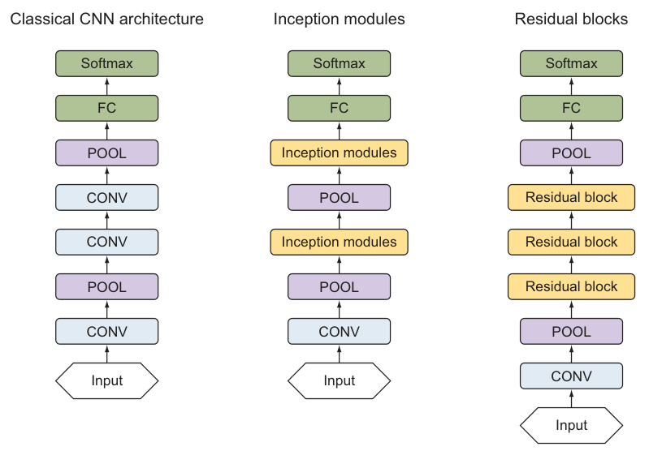
5.6.2 残差块#
残差模块两条分支：
- 捷径路径（shortcut path）：把输入原样连到加法处（图 5.22）；
- 主路（main path）：一串卷积 + 激活，共 3 个卷积层，每个卷积后接 BatchNorm（防过拟合、加速训练）。架构：\([\text{CONV} \Rightarrow \text{BN} \Rightarrow \text{ReLU}]\times3\)。
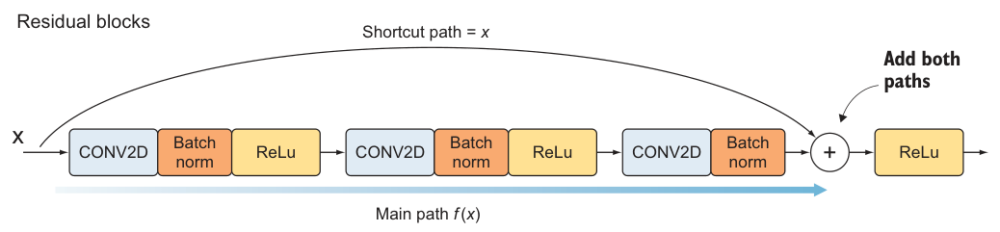
两个细节：
- 块内没有池化层。 He 等人改用瓶颈 1×1 卷积控制尺寸（和 Inception 同思路）：每个残差块以 1×1 卷积开场压输入、3×3 卷积干正事、再以 1×1 卷积收尾控输出。这个配置叫瓶颈残差块（bottleneck residual block）。
- shortcut 何时要改造？ 块与块堆叠时尺寸会变，而矩阵相加要求两路形状一致。解法：给捷径也接一个瓶颈层（1×1 卷积 + BN）再相加——这叫 reduce shortcut（图 5.23）。
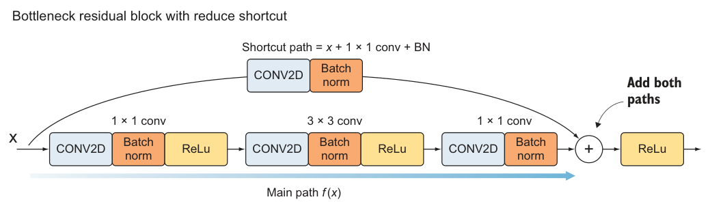
残差块小结：主路 = 1×1 → 3×3 → 1×1（各带 BN，前两层后有 ReLU）；捷径两种做法——regular shortcut（原样直连）与 reduce shortcut（中途加 1×1 conv + BN）。实现 ResNet 时两种都会用到。把残差块封装成一个类：reduce=True 走 reduce shortcut，参数里另有主路中层核大小 kernel_size、三个卷积的滤波器数 f1/f2/f3 与降采样步长 s：
# ===== 书 5.6.2 节 =====
class BottleneckBlock(nn.Module):
"""主路 [1×1 → 3×3 → 1×1]（各带 BN）+ shortcut；
reduce=True 时主路第一层与捷径都用 stride=s 降采样（reduce shortcut）"""
def __init__(self, in_ch, f1, f2, f3, kernel_size=3, reduce=False, s=2):
super().__init__()
# 主路第 1 层（1×1）：reduce 时 stride=s，与捷径同步降采样
self.conv1 = nn.Conv2d(in_ch, f1, kernel_size=1, stride=s if reduce else 1)
self.bn1 = nn.BatchNorm2d(f1)
# 主路第 2 层（3×3，same padding）
self.conv2 = nn.Conv2d(f1, f2, kernel_size=kernel_size, stride=1,
padding=kernel_size // 2)
self.bn2 = nn.BatchNorm2d(f2)
# 主路第 3 层（1×1，输出通道 f3）——BN 之后不再 ReLU，等相加后再过
self.conv3 = nn.Conv2d(f2, f3, kernel_size=1)
self.bn3 = nn.BatchNorm2d(f3)
# 捷径：reduce 时加 1×1 conv + BN 对齐尺寸；否则原样直连
if reduce:
self.shortcut = nn.Sequential(
nn.Conv2d(in_ch, f3, kernel_size=1, stride=s),
nn.BatchNorm2d(f3))
else:
self.shortcut = nn.Identity()
self.relu = nn.ReLU()
def forward(self, x):
shortcut = self.shortcut(x) # 捷径 = x（或 1×1+BN 后的 x）
out = self.relu(self.bn1(self.conv1(x))) # 主路第 1 层
out = self.relu(self.bn2(self.conv2(out))) # 主路第 2 层
out = self.bn3(self.conv3(out)) # 主路第 3 层（无 ReLU）
return self.relu(out + shortcut) # relu(f(x)+x)：先加再激活
5.6.3 ResNet50 实现（PyTorch）#
残差块就绪，叠出完整 ResNet。这里实现 ResNet50（50 个权重层，"50"由此得名）；照图 5.24 的表可同法造 18/34/101/152 层版本（18/34 层用普通 3×3 块，50 层以上用瓶颈块）。
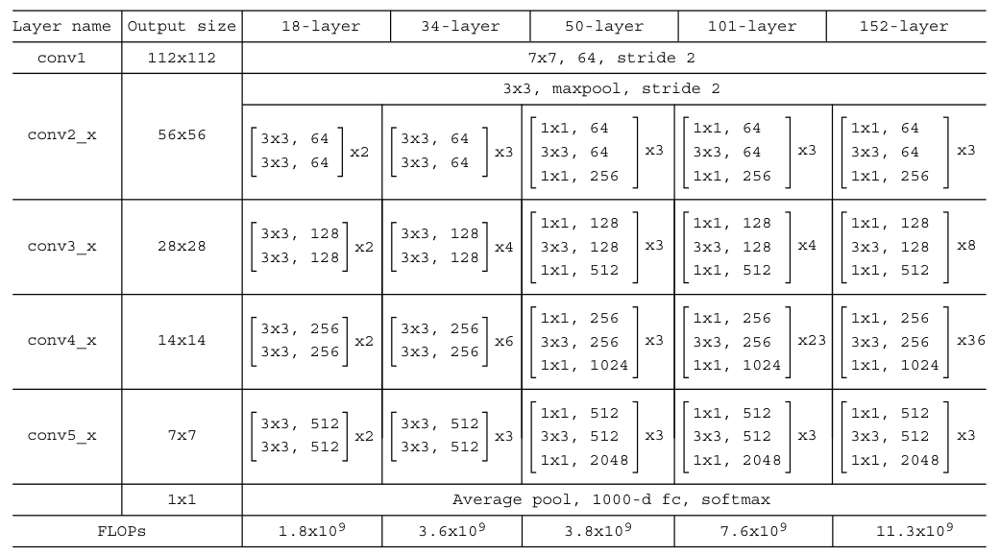
50 层的账：
| 阶段 | 内容 | 卷积层数 |
|---|---|---|
| Stage 1 | 7×7 卷积 | 1 |
| Stage 2 | 3 个残差块 × [1×1+3×3+1×1] | 9 |
| Stage 3 | 4 个残差块 | 12 |
| Stage 4 | 6 个残差块 | 18 |
| Stage 5 | 3 个残差块 | 9 |
| 输出 | 全连接 softmax | 1 |
| 合计 | 50 |
实现约定
每个阶段的第一个残差块用 reduce shortcut（降空间尺寸），其余块用 regular shortcut——对应函数里 reduce=True。
# ===== 书 5.6.3 节 =====
class ResNet50(nn.Module):
def __init__(self, num_classes=1000):
super().__init__()
# Stage 1：7×7/2 卷积 + BN + ReLU + 3×3/2 最大池化
self.stem = nn.Sequential(
nn.Conv2d(3, 64, kernel_size=7, stride=2, padding=3),
nn.BatchNorm2d(64), nn.ReLU(),
nn.MaxPooling2d(kernel_size=3, stride=2, padding=1))
def stage(in_ch, f, n_blocks, s):
# 阶段首块：reduce shortcut 降采样（stride=s）
blocks = [BottleneckBlock(in_ch, f, f, 4 * f, reduce=True, s=s)]
# 其余块：regular shortcut
blocks += [BottleneckBlock(4 * f, f, f, 4 * f) for _ in range(n_blocks - 1)]
return nn.Sequential(*blocks)
self.stage2 = stage(64, 64, 3, s=1) # 3 块 = 9 层
self.stage3 = stage(256, 128, 4, s=2) # 4 块 = 12 层
self.stage4 = stage(512, 256, 6, s=2) # 6 块 = 18 层
self.stage5 = stage(1024, 512, 3, s=2) # 3 块 = 9 层
# AVGPOOL：书中代码用 1×1 窗口的平均池化，对 7×7 输入毫无降维作用（勘误③）；
# 按原论文应使用全局平均池化：
self.avgpool = nn.AdaptiveAvgPool2d(1)
self.fc = nn.Linear(2048, num_classes) # FC + softmax（softmax 并入损失）
def forward(self, x):
x = self.stem(x)
x = self.stage5(self.stage4(self.stage3(self.stage2(x))))
x = self.avgpool(x) # 7×7×2048 → 1×1×2048
return self.fc(torch.flatten(x, 1))
model = ResNet50()
print(f"{sum(p.numel() for p in model.parameters()):,}") # 25,583,592
原书笔误（勘误③）：1×1 平均池化
原书 AVGPOOL 用的是 1×1 窗口的平均池化——1×1 窗口等于把每个数字原样复制，7×7 输入出去还是 7×7，起不到降维作用。原论文用的是 global average pooling（整张特征图取平均，7×7×2048 → 1×1×2048），PyTorch 对应 nn.AdaptiveAvgPool2d(1)。
对账：25,583,592 个可训练参数（与原书实现的口径一致，conv 带偏置；若按 torchvision 惯例在 BN 前省略 conv 偏置则为 25,557,032）。复杂度同样惊人地低：图 5.24 底部的 FLOPs 行显示 ResNet50 只需 3.8×10⁹ 次运算；书里明确说 50/101/152 层的 ResNet"复杂度比 19 层的 VGGNet 还低"——更深反而更便宜，这就是瓶颈设计的威力。
拓展：更深曾先饱和，ResNet 为何能继续加深
第 4 章的视角：更深 → 容量更大 → 更容易过拟合，但正则化能治。真正的墙是退化（degradation）：训练深度加深后，训练误差反而回升——这不是过拟合（过拟合是训练误差低、验证误差高），而是优化变难：普通深网里浅层学恒等映射都很费劲。ResNet 的两个设计正对此症：① 捷径让"学恒等"零成本（\(f\to 0\) 即可），加深不再有下限风险；② 恒等项给梯度留常数通路，很深的网络也能正常反向传播。于是 50/101/152 层全线训练成功且持续变好——深度第一次成为"可自由消费"的资源。
5.6.4 学习超参#
He et al. 沿用 AlexNet 式的训练法：mini-batch GD + momentum 0.9；初始 lr 0.1，验证误差停滞时 ÷10；L2 正则 weight decay 0.0001（书实现里为简洁未加）；每个卷积后、激活前接 BN 加速训练。训练 200 epochs、batch 256。
# ===== 书 5.6.4 节 =====
optimizer = torch.optim.SGD(model.parameters(), lr=0.1, momentum=0.9,
weight_decay=1e-4) # 论文的 L2（书代码省略，此处补上）
# 验证损失连续 5 个 epoch 停滞就把 lr 乘 √0.1 ≈ 0.316，lr 下限 5e-7
scheduler = torch.optim.lr_scheduler.ReduceLROnPlateau(
optimizer, mode='min', factor=math.sqrt(0.1), patience=5, min_lr=5e-7)
criterion = nn.CrossEntropyLoss()
# 训练 200 epochs、batch_size=256
5.6.5 ResNet 成绩#
ResNet-152 拿下 ILSVRC 2015 分类冠军：单模型 top-5 错误率 4.49%，模型集成后 3.57%——大幅领先 GoogLeNet 的 6.67%。它还顺手拿下了当年多个检测与定位赛事的第一（第 7 章再会）。更重要的遗产：残差块打开了高效训练数百层网络的大门，此后"残差"成了所有极深网络（含 Transformer）的标配组件。
侧栏：善用开源实现
实战建议：这些网络因为学习率衰减等调参细节非常"娇气"，照论文复现很难完全对上——DL 研究者复现别人的工作也费劲。好在大多数研究者会把代码开源：GitHub 搜网络名，能找到现成的 PyTorch 实现；找到原作者的实现可以直接起飞。当然，像本章这样从零重写一遍也是极好的练习。
5.7 五大架构演进总览#
把五代网络串成一条决策链——每一环都在解决上一环暴露的短板：
flowchart LR
A["LeNet-5 · 1998<br/>5 层 · 6.1万参数"] -->|"MNIST 太简单<br/>想去啃真实大图"| B["AlexNet · 2012<br/>ReLU · Dropout · 增强"]
B -->|"每层超参全靠试错"| C["VGGNet · 2014<br/>统一 3×3 + 2×2"]
C -->|"参数爆炸 · 大核太贵"| D["GoogLeNet · 2014<br/>Inception 并行 + 1×1 降维"]
D -->|"还想更深？梯度传不动"| E["ResNet · 2015<br/>残差块 + skip connection"]一张表收拢全部关键数字：
| 架构 | 年份 | 深度（权重层） | 核心创新 | 参数量 | ILSVRC 成绩（top-5 错误率） |
|---|---|---|---|---|---|
| LeNet-5 | 1998 | 5（3 conv + 2 FC） | 首个完整 CNN 范式；tanh + 平均池化 | 61,706 | （MNIST >99%，非 ILSVRC） |
| AlexNet | 2012 | 8（5 conv + 3 FC） | ReLU、Dropout 0.5、数据增强、LRN、双 GPU | ≈6,200 万 | 2012 冠军 15.3%（第二名 26.2%） |
| VGGNet | 2014 | 16 / 19 | 统一 3×3 conv + 2×2 pool；小核堆叠替代大核 | 1.38 亿 / 1.44 亿 | 8.1% / 7.4% |
| GoogLeNet | 2014 | 22 | Inception 模块（多尺度并行）+ 1×1 降维 | ≈1,300 万 | 2014 冠军 6.67% |
| ResNet | 2015 | 50 / 101 / 152 | 残差块 + skip connection；重度 BN；bottleneck | ≈2,560 万（50 层） | 2015 冠军 3.57%（集成）/ 4.49%（单模型） |
训练配置也值得并排看一眼（各节已给出 PyTorch 代码）：
| 网络 | 优化器 | 初始 lr | 调度 | batch | epochs |
|---|---|---|---|---|---|
| LeNet-5 | SGD | 5e-4 | 分段衰减（⅔/4 个 epoch 各降一档） | 32 | 20 |
| AlexNet | SGD, momentum 0.9 | 0.01 | 验证损失停滞 ×√0.1 | 128 | 90 |
| VGGNet | GD, momentum 0.9 | 0.01 | 验证准确率停滞 ÷10 | — | — |
| GoogLeNet | SGD, momentum 0.9 | 0.01 | 每 8 epoch ×0.96 | 256 | 25（示例） |
| ResNet | SGD, momentum 0.9 | 0.1 | 验证损失停滞 ×√0.1（patience 5） | 256 | 200 |
一条隐藏主线：分类器部分（FC + softmax）五年几乎没动，进化的全部火力都集中在特征提取器的组织方式上——串叠 → 统一串叠 → 模块堆叠 → 带捷径的模块堆叠。记住这条线，第 6 章的迁移学习（直接拿这些架构当预训练特征提取器）就顺理成章了。
坑与陷阱#
8 个容易踩的坑
- AlexNet 输入是 227×227×3，不是 224：论文写 224，但 \((227-11)/4+1=55\) 才算得通；复现用 227。
- naive Inception 拼接深度别漏算池化分支：池化不改通道，输入 200 通道时拼接是 64+128+32+200 = 424（书误写 256）。
- 池化层不降深度：想让 Inception 拼接深度可控，池化后必须补 1×1；想让网络变窄，靠的也是 1×1 而不是池化。
- 残差块相加发生在最后的 ReLU 之前：主路第三层只有 CONV+BN，没有 ReLU；先 \(f(x)+x\) 再统一激活。
- 块间尺寸变了必须用 reduce shortcut：矩阵相加要求形状一致；捷径上的 1×1 conv + BN 负责对齐尺寸与步长。
- 1×1 平均池化不是全局平均池化：1×1 窗口对 7×7 毫无作用；用
nn.AdaptiveAvgPool2d(1)。 - weight_decay 作用于优化器里的全部参数：包括 bias 和 BN 的 γ/β，比"只罚卷积核"（一些论文的做法）更粗；想精确复现就给参数分组，把 bias/BN 组的 weight_decay 设为 0。
- lr 调度器的 epoch 从 0 计数：抄学习率调度函数时核对边界（"前 2 个 epoch"到底是 epoch<2 还是 ≤2）。
速览#
- 三条设计模式：特征提取（conv）+ 分类（FC） 两段式；深度增加、空间维度减小；FC 单元数恒定或递减。
- 网络深度按权重层（conv + FC）称呼：LeNet-5、AlexNet-8、VGG16/19、GoogLeNet-22、ResNet-50/101/152。
- LeNet-5：tanh + 5×5 卷积 + 平均池化，61,706 参数，MNIST >99%。
- AlexNet 三板斧：ReLU 治梯度消失、Dropout 0.5 + 数据增强治过拟合；另有 LRN（今被 BN 取代）与双 GPU 训练；top-5 15.3% vs 第二名 26.2%。
- VGG 的统一美学：全 3×3（stride 1, same）+ 全 2×2 池化（stride 2）；两个 3×3 ≈ 5×5 感受野、三层 ≈ 7×7，27C² 对 49C² 省 81% 参数；138M / 144M。
- Inception 的豪横：核尺寸与池化位置别选了，四路并行、深度拼接；1×1 reduce 层把 5×5 分支的 1.63 亿乘法砍到 1,630 万。
- GoogLeNet 三段式：Part A 经典开场 + Part B 九个模块（2+5+2）+ Part C 分类器；约 1,300 万参数拿 6.67%。
- ResNet 残差块：主路 [1×1→3×3→1×1] 各带 BN，捷径 x 直连，\(\text{relu}(f(x)+x)\)；恒等项给梯度留了一条常数通道。
- ResNet50 = 1 + 9 + 12 + 18 + 9 + 1 = 50 权重层；每阶段首块用 reduce shortcut；全局平均池化收尾；2,558 万参数拿下 3.57%。
- 演进主线：特征提取器的组织方式从串叠 → 统一串叠 → 模块堆叠 → 残差堆叠；分类器五年没变；top-5 错误率 15.3% → 8.1% → 6.67% → 3.57%。
术语速查#
| 英文 | 中文 | 一句话 |
|---|---|---|
| Weight Layer | 权重层 | 带可训练权重的层（conv/FC），网络深度的计数单位 |
| Design Pattern | 设计模式 | CNN 反复出现的结构套路（两段式、深而窄等） |
| Receptive Field | 感受野 | 输出所依赖的输入区域；两个 3×3 ≈ 一个 5×5 |
| Vanishing / Exploding Gradients | 梯度消失 / 爆炸 | 梯度逐层连乘指数缩小 / 放大，深网训练受阻 |
| ReLU | 修正线性单元 | \(f(x)=\max(0,x)\)，正区导数恒 1，训练快 |
| Dropout | 随机失活 | 训练时按概率暂时删神经元，等价于隐式集成 |
| Data Augmentation | 数据增强 | 保标签变换扩充数据（旋转/翻转/缩放） |
| Local Response Normalization (LRN) | 局部响应归一化 | AlexNet 时代的跨通道归一化，已被 BN 取代 |
| Batch Normalization (BN) | 批归一化 | 按 mini-batch 统计量归一化，深网标配 |
| Weight Decay / L2 | 权重衰减 | L2 正则；PyTorch 在优化器里写 weight_decay |
| Top-1 / Top-5 Error | Top-1 / Top-5 错误率 | 正确类未得最高分 / 未进前五的比例 |
| ILSVRC | ImageNet 大规模视觉识别挑战赛 | 各架构对榜的年度竞赛 |
| Inception Module | Inception 模块 | 1×1 / 3×3 / 5×5 / 池化四路并行再拼接 |
| Depth Concatenation | 深度拼接 | 沿通道维拼接多分支输出 |
| Reduce Layer / Bottleneck | 降维层 / 瓶颈层 | 1×1 卷积压通道，省算力省参数 |
| Skip Connection | 跳跃连接 | 给梯度开捷径：把输入直接加到块输出上 |
| Residual Block | 残差块 | 主路 + 捷径，输出 relu(f(x)+x) |
| Regular / Reduce Shortcut | 常规 / 降维捷径 | 捷径直连 vs 加 1×1+BN 对齐尺寸 |
| Global Average Pooling | 全局平均池化 | 整张特征图取平均，H×W×C → 1×1×C |
| Auxiliary Classifier | 辅助分类器 | GoogLeNet 中途的分支头，注入梯度（13M 口径的来源） |
| Nesterov Momentum | Nesterov 动量 | 先按动量试探再算梯度的 SGD 变体 |
| Bottleneck Residual Block | 瓶颈残差块 | 1×1→3×3→1×1 主路的残差块，ResNet50 起用 |